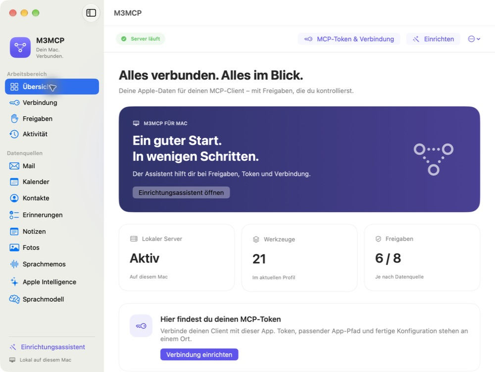
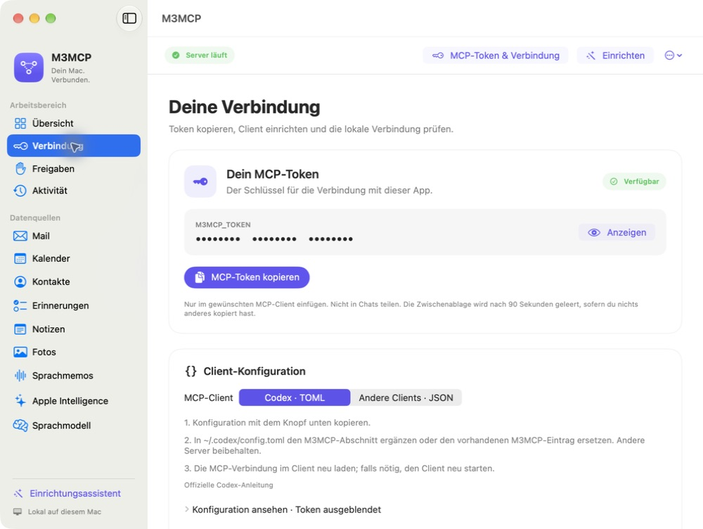
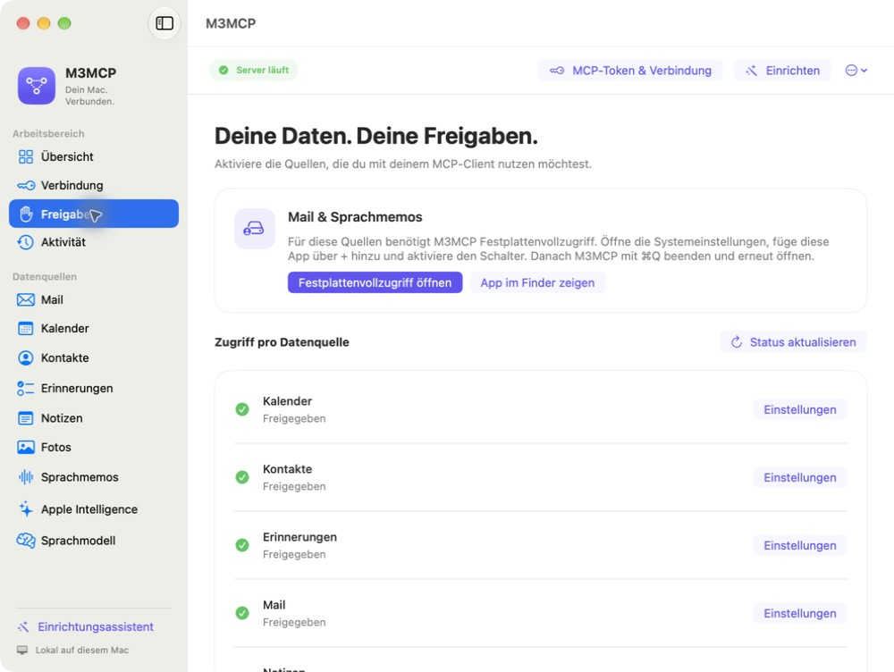
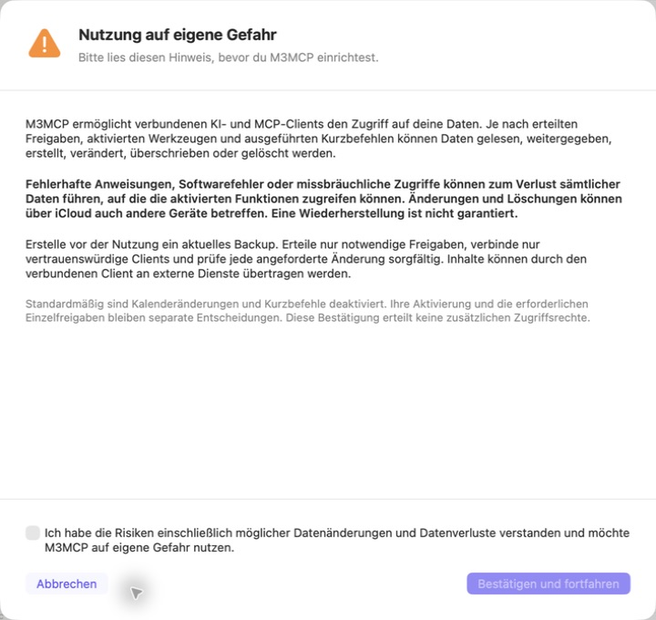

Lokale Mails suchen und lesen.
M3MCP · Native App für macOS
Dein Mac.
Dein Assistent.
Eine Verbindung.
Finde Mails, Termine und Sprachmemos mit deinem KI-Assistenten. M3MCP verbindet deinen MCP-Client mit den Apple-Daten auf deinem Mac.

Deine vertrauten Apple-Apps
Was du suchst, ist schon auf deinem Mac.
Stelle die Frage in deinem verbundenen Client. M3MCP führt die unterstützte Abfrage lokal aus – mit den Freigaben, die du erteilt hast.
Kalender
Termine finden und Ereignisse lesen.
Kontakte
Das lokale Adressbuch durchsuchen.
Erinnerungen
Titel, Notizen und Listen durchsuchen; nach Erledigungsstatus filtern.
Notizen
Apple Notes über Automation suchen und lesen.
Fotos
Metadaten der Mediathek durchsuchen.
Sprachmemos
Aufnahmen finden und Transkripte lesen oder auf dem Gerät erzeugen.
Eine erste Frage
„Zeige mir meine fünf neuesten Mails.“
Zusätzlich: lokale Zusammenfassungen und Image Playground auf unterstützten Systemen. Verfügbarkeit und Modelle hängen von macOS und Hardware ab. Eigene Kurzbefehle sind separat aktivierbar.
Die App im Detail
Weniger suchen.
Mehr Überblick.
Originalaufnahmen der installierten App. Die Bilder lassen sich in voller Größe öffnen.
01 / VerbindungDein Token.
Dein Token.
Direkt griffbereit.
Auf der Verbindungsseite findest du deinen MCP-Token und die passende Konfiguration für Codex oder andere MCP-Clients.
Der Token bleibt zunächst verborgen. Kopieren erfolgt bewusst per Klick; die Konfigurationsvorschau enthält nur einen Platzhalter.
Zur Einrichtung
02 / FreigabenDu entscheidest,
Du entscheidest,
was zugänglich ist.
Kalender, Kontakte und Erinnerungen: Der aktuelle Freigabestatus steht direkt an der jeweiligen Quelle. macOS fragt dich nach den nötigen Berechtigungen.
Für Mail und Sprachmemos führt die App zum Festplattenvollzugriff. Auf einem weiteren Mac richtest du Freigaben und Verbindung erneut ein.

Von der App zur ersten Frage
Einrichten. Verbinden. Losfragen.
Vor dem Start liest und bestätigst du „Nutzung auf eigene Gefahr“. Danach begleitet dich der Assistent durch vier Schritte.
- 1
Willkommen
Lerne den Ablauf kennen. Einen zusätzlichen Apple-Login braucht M3MCP nicht.
- 2
Freigaben
Wähle deine Datenquellen und erteile die nötigen Rechte in macOS.
- 3
Verbindung
Kopiere die Konfiguration inklusive Token in deinen Client und lade dessen MCP-Verbindung neu.
- 4
Prüfen
Klicke auf „Lokale Verbindung testen“. Erst nach erfolgreichem Test wird „Einrichtung abschließen“ aktiv.
Der lokale Test prüft App und Bridge.Ob dein Client eingerichtet ist, prüfst du dort mit einer ersten Anfrage. Nach einem Neustart der App ist für den Abschluss erneut ein lokaler Test nötig.
Bewusst verbinden
Deine Daten verdienen
eine klare Entscheidung.
„Nutzung auf eigene Gefahr“ steht vor dem ersten Serverstart. Ohne ausdrückliche Bestätigung bleibt der Server gestoppt.
Aktivierte Funktionen und Kurzbefehle können Daten verändern oder löschen. Änderungen können sich über iCloud auf weitere Geräte übertragen. Lege ein Backup an und verbinde nur Clients, denen du vertraust.
Die Abfragen laufen lokal. Ein verbundener KI-Client kann Inhalte jedoch an externe Dienste weitergeben.
Zugriffsmodell im Detail
Open Source · Apache 2.0
Mach deinen Mac
zum Teil deines Workflows.
Quellcode, Installationsanleitung und veröffentlichte Versionen findest du auf GitHub.
Die Screenshots zeigen den Entwicklungsstand 0.3.1. Eine veröffentlichte Version kann davon abweichen. Automatische Release-Kandidaten sind für Apple Silicon gebaut, ad-hoc signiert und nicht notarisiert.
Welche Werkzeuge sind standardmäßig aktiv?
21 Standardwerkzeuge
Lesen, begrenzte lokale Verarbeitung und lokale Erzeugung. Kalenderänderungen und eigene Kurzbefehle sind standardmäßig deaktiviert. Nach gesonderter Aktivierung brauchen sie für jeden Aufruf eine native Bestätigung.
Für fortgeschrittene Konfiguration gelten drei getrennte Startoptionen:
M3MCP_ENABLE_CALENDAR_MUTATIONS– KalenderänderungenM3MCP_ENABLE_PERMISSION_UI– entfernte MCP-FreigabeaktionenM3MCP_ENABLE_USER_SHORTCUTS– eigene Kurzbefehle
Native Freigabeknöpfe funktionieren auch ohne die entfernten Freigabewerkzeuge. Kurzbefehle können Netzwerkzugriffe und weitere Nebenwirkungen auslösen. Lokale Transkripte können in Application Support gespeichert bleiben.
Wie funktioniert die Verbindung?
- Dein MCP-Client
- Die mitgelieferte M3MCPBridge über stdio
- Die native M3MCP-App über einen lokalen Unix-Socket
- Die freigegebene Apple-Datenquelle
Der Token liegt im Anmeldeschlüsselbund. Die App prüft außerdem die mitgelieferte Bridge. Diese Prüfung identifiziert das Programm, nicht den aufrufenden Client. Behandle deshalb jeden verbundenen Client als vertrauenswürdig.
macOS 15 oder neuer ist erforderlich. Zum Bauen aus Quellcode wird das macOS-26-SDK benötigt. Apple-Intelligence-Funktionen haben zusätzliche System- und Hardwarevoraussetzungen.
swift build
swift test
./script/build_and_run.shDer Entwicklungsbuild erzeugt .build/debug/M3MCPBridge. Für die Verbindung mit der gebündelten App verwende die Bridge aus genau dieser Installation: M3MCP.app/Contents/MacOS/M3MCPBridge. Die App erstellt die passende Client-Konfiguration.
Was muss ich bei einem Download beachten?
Ein Release kann M3MCP.app.zip und M3MCP.app.zip.sha256 bereitstellen. Enthalten sind die App, Bridge, Apache-2.0-Lizenz und Hinweise zu Drittkomponenten.
Automatische Kandidaten sind ad-hoc signiert und nicht notarisiert. Eine Prüfsumme bestätigt die Übereinstimmung mit dem veröffentlichten Paket, aber nicht allein die Identität des Herausgebers. GitHub-Herkunftsnachweise ersetzen keine Developer-ID-Signatur oder Notarisierung.
shasum -a 256 -c M3MCP.app.zip.sha256
# Optional: GitHub-Herkunftsnachweis prüfen, sofern vorhanden
gh attestation verify M3MCP.app.zip \
--repo GodModeAI2025/AppleMCP \
--signer-workflow GodModeAI2025/AppleMCP/.github/workflows/release.ymlWenn Gatekeeper die App blockiert, prüfe zuerst ihre Herkunft. Nutze eine Freigabe in den Systemeinstellungen nur, wenn du dem Paket vertraust. Entferne keine Quarantänemarkierungen, um die Prüfung zu umgehen. Nach einem Update können Datenschutzfreigaben erneut nötig sein.